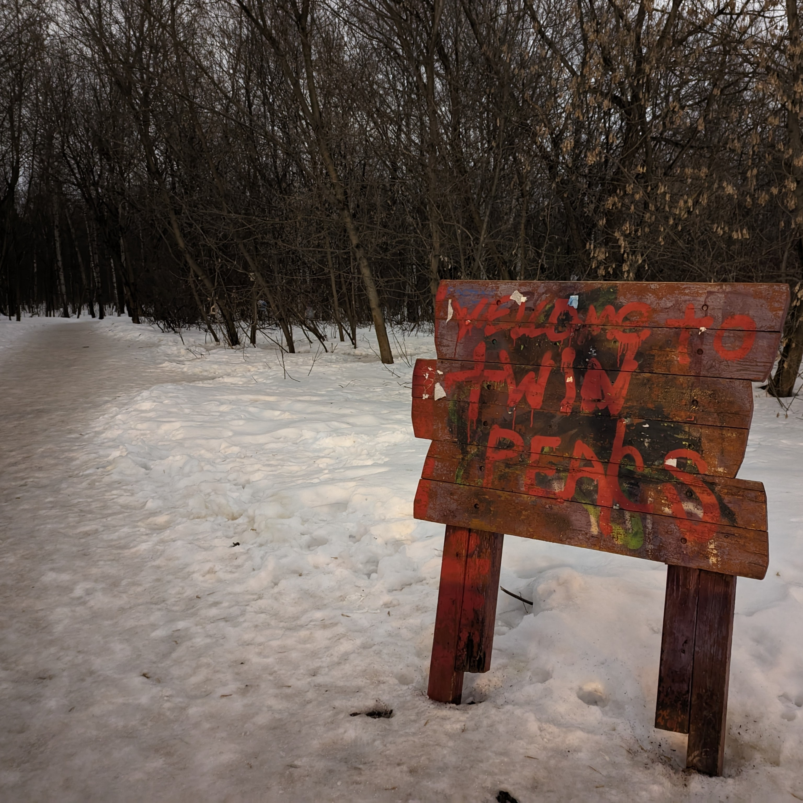

Фритрек и нулевой спринт: Подготовка к работе

<Страх>
Это было самое начало пути. На этом этапе важно было проникнуться основами и настроиться на учёбу. И, возможно, подумать, как новые знания могут повлиять на ваше будущее.
Всегда страшно признавать, что ты чего-то не знаешь, и не менее страшно предпринимать действия для изменения ситуации.